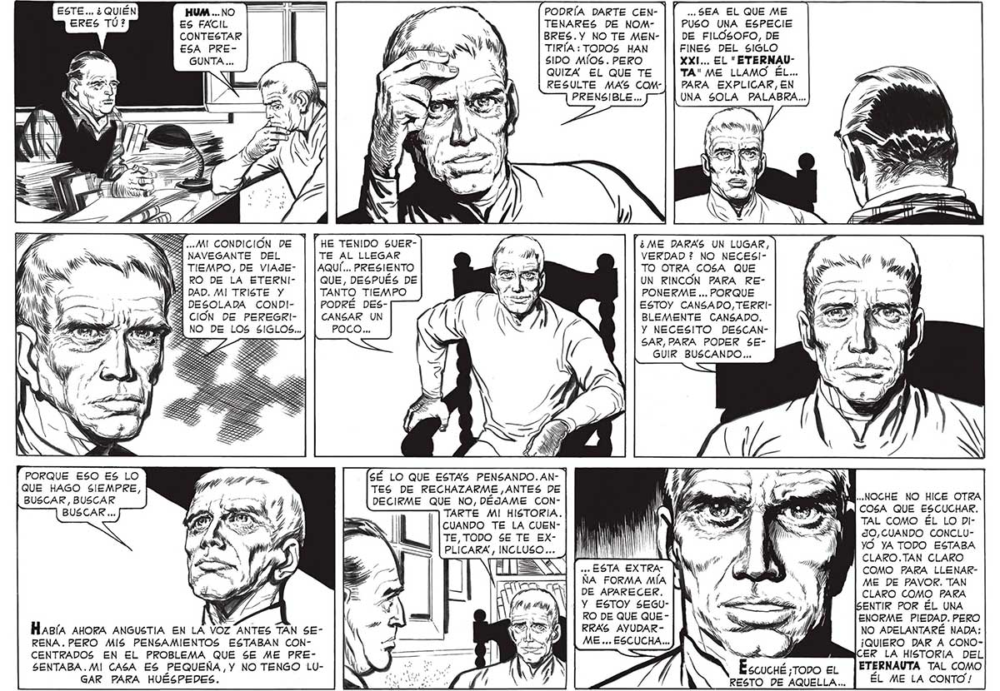

ESTE... ¿ QUIÉN , HUM ... NO ERES TÚ? ES FACIL CONTESTAR ESA PREPODRÍA DARTE CEN- | TENARES DE NOMBRES.Y NO TE MENTIRÍA: TODOS HAN SIDO MÍOS. PERO QUIZA EL QUE TE RESULTE MAS COMPRENSIBLE.... .. SEA EL QUE ME PUSO UNA ESPECIE DE FILÓSOFO, DE FINES DEL SIGLO XXI... EL "ETERNAUTA" ME LLAMO ÉL... PARA EXPLICAR, EN 15 UNA SOLA PALABRA... 4 NW SN AN PNG HE TENIDO SUERTE AL LLEGAR AQUÍ... PRESIENTO QUE, DESPUÉS DE TANTO TIEMPO PODRÉ DESCANSAR UN POCO... ¿ME DARAS UN LUGAR, VERDAD ? NO NECESI| TO OTRA COSA QUE UN RINCON PARA REPONERME ... PORQUE ESTOY CANSADO, TERRIBLEMENTE CANSADO. Y NECESITO DESCANSAR, PARA PODER SEGUIR BUSCANDO... S TIEMPO, DE VIAJEÍ RO DE LA ETERNIPORQUE ESO ES LO QUE HAGO SIEMPRE, BUSCAR, BUSCAR SÉ LO QUE ESTAS PENSANDO.AN- | TES DE RECHAZARME ANTES DE DECIRME QUE NO, DÉJAME CON+ NOCHE NO HICE OTRA TARTE MI HISTORIA. ILL] COSA QUE ESCUCHAR. CUANDO TE LA CUENTE, TODO SE TE EXPLICARA, INCLUSO... TAL COMO ÉL LO DIJO,CUANDO CONCLUyO YA TODO ESTABA CLARO.TAN CLARO COMO PARA LLENARME DE PAVOR. TAN CLARO COMO PARA ENTIR POR ÉL UNA ENORME PIEDAD. PERO NO ADELANTARÉ NADA: ¡QUIERO DAR A CONOER LA HISTORIA DEL ETERNAUTA TAL COMO ÉL ME LA CONTO! ... ESTA EXTRAÑA FORMA MÍA DE APARECER. Y ESTOY SEGURO DE QUE QUE RRAS AYUDARME ... ESCUCHA ... NS y Hasía AHORA ANGUSTIA EN LA VOZ ANTES TAN SERENA. PERO MIS PENSAMIENTOS ESTABAN CONCENTRADOS EN EL PROBLEMA QUE SE ME PRESENTABA. MI CASA ES PEQUEÑA,Y NO TENGO LUGAR PARA HUÉSPEDES.
